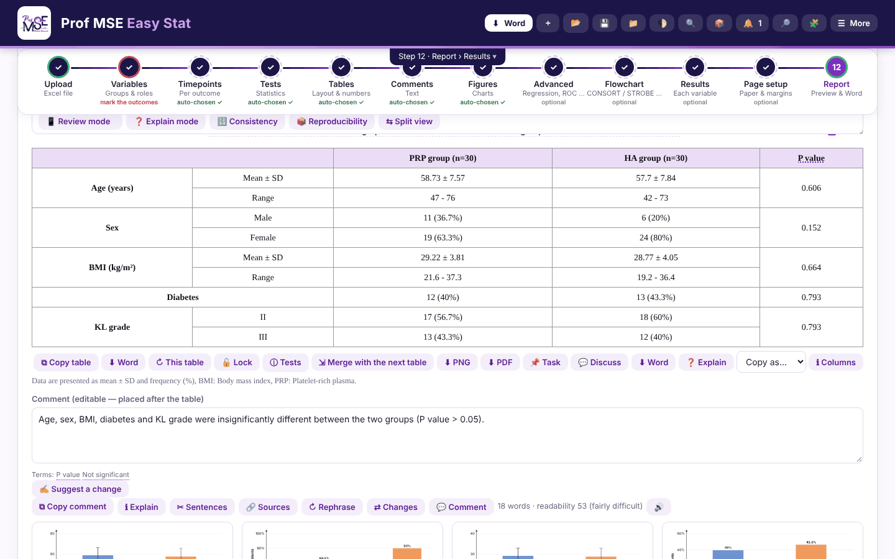
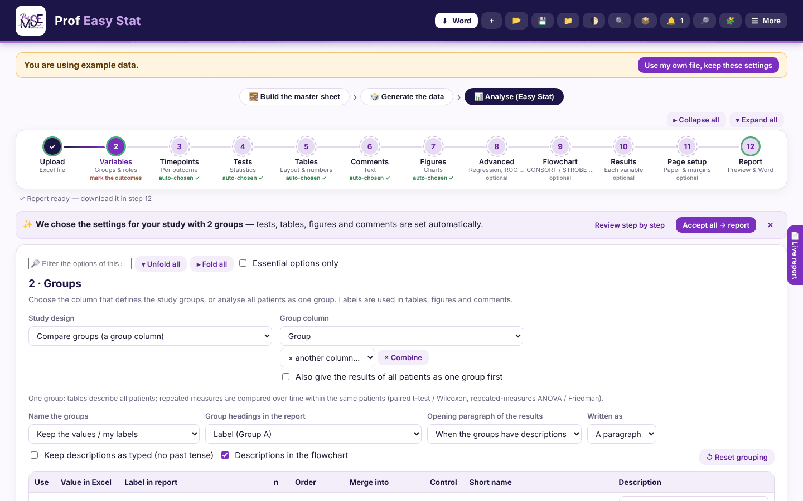

Everything a results chapter needs
📋 Tables
Baseline and outcome tables with mean ± SD or median (IQR), n (%), P values, effect sizes and 95% CI, footnotes and abbreviations explained.
🧪 The right test, chosen for you
Normality is checked for each variable: t-test or Mann–Whitney, ANOVA or Kruskal–Wallis with post hoc tests, chi-square or Fisher’s exact test, paired and repeated measures.
💬 Written comments
A clear sentence under every table, the statistical analysis paragraph for your methods, and a summary of the key findings.
📈 Figures
Bar, box, line, violin, ROC, Kaplan–Meier and forest plots, formatted like Excel, at 300 dpi for printing.
🔀 Flowcharts
CONSORT, STROBE and STARD flowcharts drawn from your numbers, with their text.
📐 Advanced analyses
Linear, logistic and Cox regression, ROC with cut-offs, survival, ANCOVA, agreement (ICC, kappa, Bland–Altman), Cronbach’s α, factor analysis, propensity scores.
🎓 Thesis or paper format
Thesis on A4 or B5 pages, or a journal paper; Word, PDF, Excel and PowerPoint exports; your university’s Word template.
🛡 Clean data first
Impossible values, duplicate patients, digit preference and inconsistent columns found before they reach your report.
How it works
- Upload your Excel or CSV sheet — one row per patient, one column per variable (or open one of the 18 example studies).
- Check the groups and variables — the app reads the types, units and categories; change anything you like.
- Get the report — tables, comments, figures and the flowchart appear at once; edit the text, then download Word.
Planning a study? The Build phase designs your master sheet and data-collection form, and the Generate phase makes simulated data with a known truth for teaching and testing your analysis plan.

Questions
Is Prof Easy Stat free?
Yes. It is free and runs in your web browser; there is nothing to install and no account.
Are my patients’ data uploaded anywhere?
No. The analysis runs on your own computer, inside the browser. The data are not sent to a server.
Which statistical tests does it use?
It checks each variable’s type and distribution and chooses the test: t-test or Mann–Whitney, ANOVA or Kruskal–Wallis, chi-square or Fisher’s exact test, paired tests and repeated measures, with post hoc tests; regression, ROC, survival, agreement and many more analyses are available in the advanced step.
Can I use it instead of SPSS for my thesis?
For the usual analyses of a medical thesis — descriptive tables, group comparisons, correlations, regression, ROC and survival — it produces the tables, figures and text in Word. Your supervisor should still review the analysis plan and the results.
What does the Word report contain?
The statistical analysis paragraph, the flowchart and its text, numbered tables with footnotes, a written comment under each table, figures with captions, and optional sections such as a summary of the results.